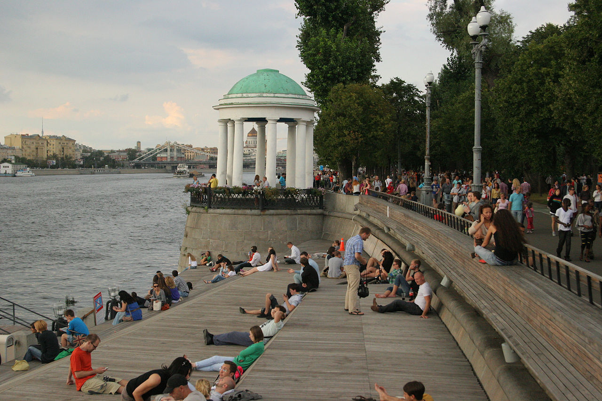
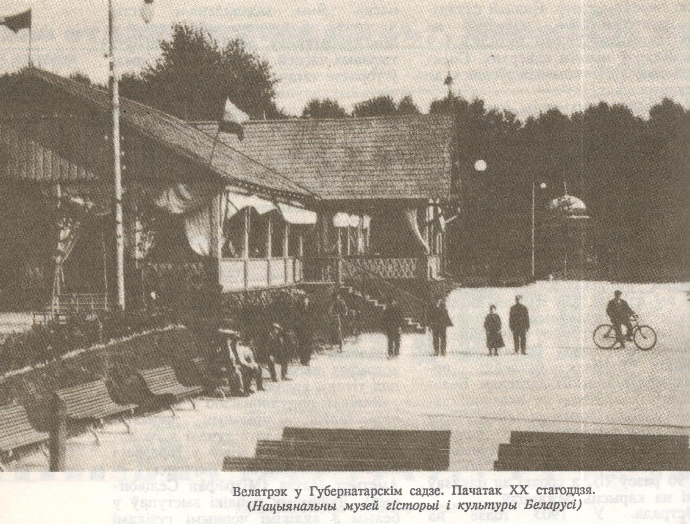
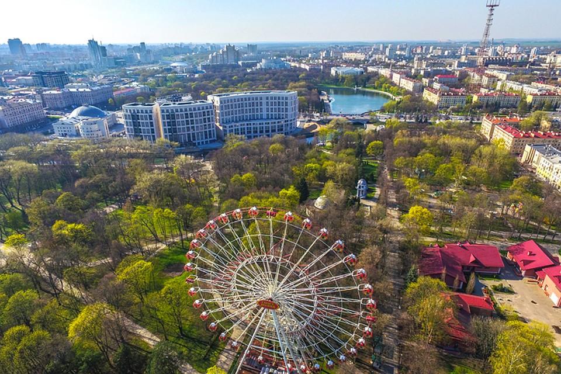
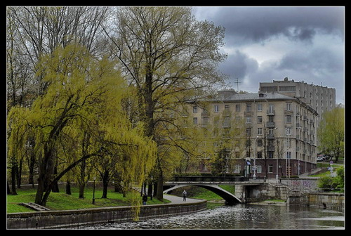

Губернатарскі сад, альбо парк, быў закладзены ў 1800 годзе па ініцыятыве
мінскага губернатара Захара Карнеева для адпачынку жыхароў горада. Тады ён
займаў 18 га і быў ледзьве не буйнейшым паркам Беларусі. У ім меліся гаючыя
крыніцы, былі добраўпарадкаваны алеі, улетку працавала лодачная станцыя, узімку –
каток.
Напрыканцы ХIХ–ХХ стагоддзяў у парку меўся велатрэк – першае спартыўнае
збудаванне горада, дзе праводзіліся спаборніцтвы і выставы. У парку працаваў летні
тэатр. Напрыканцы 1891 года ў адным з памяшканняў пры летнім тэатры Маас,
архітэктар губернскага ўпраўлення, стварыў мастацка-сталярную майстэрню, у якой
не толькі бясплатна выкладаў, але і выдаваў вучням штотыдзень па 50 капеек са сваіх
сродкаў, каб даць ім магчымасць наведваць заняткі. З пачаткам тэатральнага сезона
майстэрня пазбавілася памяшкання. На пачатку 1900-х гадоў у Губернатарскі парк перабраўся цырк. Ягоны будынак
месціўся там, дзе зараз знаходзіцца помнік М. Горкаму.
У 1892 годзе арганізавалася гарадское таварыства аматараў спорта, старшынёй
якога стаў Караль Чапскі. Сталых членаў у 1898 годзе налічвалася ўсяго 134, штогод
яны плацілі даволі высокія ўзносы – па 6–7 рублёў. Заснавальнікам таварыства
бачыўся цэлы комплекс спартыўных збудаванняў, дзе можна займацца гімнастыкай,
фехтаваннем, плаваннем, верхавой яздой, катацца на роварах, каньках. Не ўсе планы
здейсніліся, але ў горадзе ўсё ж з’явіўся першы, няхай сабе невялікі, стадыён з
велатрэкам, з пляцоўкамі для лаўн-тэніса, кегельбана, кракета, з гімнастычным
абсталяваннем і гульнямі для дзяцей.
Месціўся ён у Гарадскім садзе недалёка ад таго месца, дзе ў наш час пабудавалі
спартыўны комплекс з боку вуліцы Першамайскай



